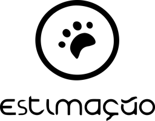
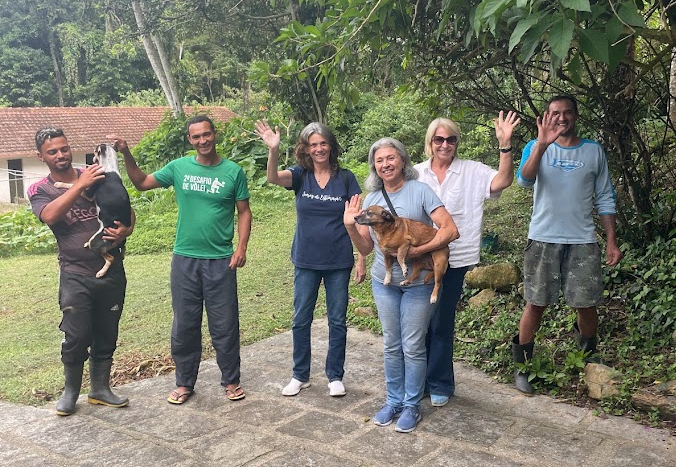

HÁ MAIS DE 20 ANOS SALVANDO VIDAS.
Teresópolis, Rio de Janeiro. Cada doação alimenta e cuida de quem foi resgatado.

Nossa equipe em Teresópolis
Quem somos
O Grupo Estimação / SOS Animal foi fundado por Bebete Filpi e fica em Teresópolis, no estado do Rio de Janeiro. Há mais de 20 anos resgatamos animais em situação de risco nas ruas.
Em 2011, na grande enchente de Teresópolis, o grupo foi às ruas desde as primeiras horas. Quase dois mil animais precisaram de ajuda. Muita gente não olhava para os bichos. Nós olhamos.
Depois da tragédia, assumimos o santuário SOS Animal, no Parque dos Três Picos, para continuar cuidando de quem foi resgatado. Seguimos sem ajuda do governo, contando com a solidariedade de pessoas como você.
Seja um apoiador mensal!
Com uma contribuição todo mês, você ajuda a garantir ração, remédios e cuidado para dezenas de animais. É simples, seguro e faz diferença de verdade no abrigo.
Qualquer valor ajuda. Quanto mais pessoas apoiam todos os meses, menos precisamos recorrer a empréstimos para manter o trabalho.
Quero apoiar todo mêsAcompanhe o número de animais
Estimativa
Os números abaixo são estimativas ao longo dos anos. Servem para mostrar o tamanho do nosso cuidado, não um censo oficial.
Estimativa agora (2026): —
Estimativa agora (2026): —
Cases de resgate
Toque em uma foto ou vídeo para ver a história.
Esses são apenas alguns dos mais de 10.000 animais que já passaram por nossos cuidados. Faça parte disso você também! Contribua através do pix, ou torne-se um apoiador no apoia-se!
Gastos do mês
Total estimado: R$ 71.800
Muitas vezes precisamos recorrer a empréstimos. Não temos nenhuma ajuda do governo e as doações quase nunca cobrem todos os custos.